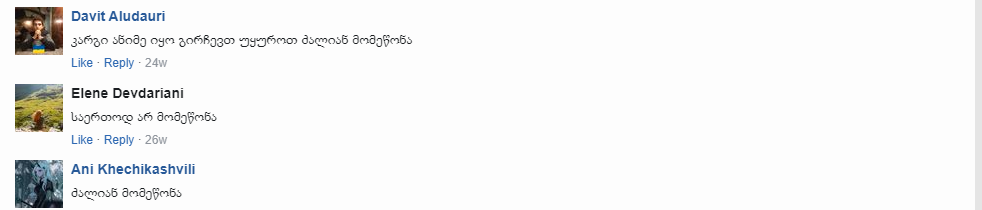

ქვეყანა:იაპონია
რეჟისორი:ჰაიაო მიაძაკი
ახალგაზრდა პრინცი აშიტაკა, ურჩხულის მოკვლით, სასიკვდილოდ დაიწყევლა. მკითხავმა უმკითხავა, რომ მხოლოდ თავად მას შეუძლია საკუთარი ბედის შეცვლა. მამაცი მეომარი გაემგზავრა სახიფათო მოგზაურობაში. ის აღმოჩნდება იდუმალ ქვეყანაში, სადაც ადამიანები ბოროტი ქალბატონის სათავეში ტყის ბინადართ ეომებიან: სულებს, ეშმაკებს და გიგანტურ არსებებს, რომელთა მსგავსნი აშიტაკას არასოდეს უნახავს.
